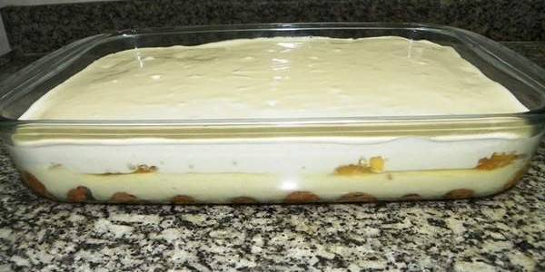

Receita - Pavê

Pavê
Ingredientes
Creme
- 1 lata de leite condensado
- 1 lata de leite
- 4 gemas
- 1 colher de essência de baunilha
Cobertura
- 4 claras em neve
- 4 colheres de açúcar
- 1 lata de creme de leite sem soro
Base
- 1 pacote de biscoito maisena
- 1 xícara de leite
- 2 colheres de achocolatado em pó
Modo de Preparo
- Leve os ingredientes do creme ao fogo, exceto a baunilha, mexa até engrossar
- Apague o fogo e adicione a baunilha
- Reserve
- Bata as claras em neve com o açúcar até dar o ponto de suspiro
- Misture a lata de creme de leite e reserve
Montagem
- Em um refratário pequeno, coloque todo o creme, por cima os biscoitos molhados no leite com o achocolatado, e por cima a cobertura de clara em neve
- Decore com achocolatado polvilhado e leve à geladeira por 3 horas
- Sirva geladinho
Informações Nutricionais
| Nutrientes |
Porção(60g) |
%VD |
| Valor Calórico(Kcal) |
292,37 |
14,62 |
| Carboidratos(g) |
21,97 |
7,32 |
| Proteínas(g) |
5,76 |
7,68 |
| Gorduras Totais(g) |
21 |
38,18 |
| Gorduras Saturadas(g) |
9,23 |
41,93 |
| Fibras Alimentares(g) |
1,04 |
4,18 |
| Sódio(mg) |
199,01 |
8,29 |
Voltar ao topo